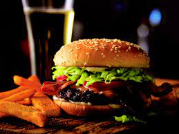

Bacon Cheeseburger

Ready you're grill for this one
Ingredients:
- 1 pound sliced bacon, diced
- 5 pounds ground beef chuck
- 1 large onion, chopped
- ¼ cup steak sauce
- salt and pepper to taste
- 1 pound American cheese slices
Instructions:
- Preheat a grill for high heat.
- Place bacon in a large skillet over medium heat. Fry, stirring occasionally. When the bacon is almost done, add the onion. Cook until the bacon is crisp, and the onion is tender. Remove onion and bacon from the pan with a slotted spoon, and transfer to a food processor. Pulse a couple of times to chop finely. Do not puree. Pour into a large bowl, and mix with steak sauce and ground chuck using your hands. Form into 16 patties.
- Place patties on the grill, and cook for 5 minutes per side, or until well done. Place a slice of cheese on top of each one during the last minute.